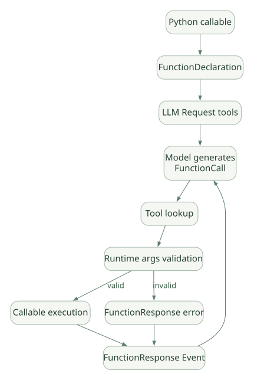

SECOND STUDY / Tool 준비·병렬·실패
Tool 준비·병렬·실패
이번 단원의 읽는 관점
선언 생성·Lookup 준비·Callback·Python 실행과 병렬 Task 처리를 나눕니다.
살펴볼 경계_prepare_single은 Tool 본체·before Callback을 실행하지 않습니다. 부분 성공 보존의 조건도 확인하세요.
이 페이지의 세부 목차
Part III. Tool 실행기는 어떻게 작동하는가
11. FunctionTool: Python 함수가 모델 Tool이 되는 과정#
Tool 호출은 세 단계로 구분해야 한다.
- 등록/노출: Python callable의 signature·docstring·타입 힌트에서 모델이 볼 FunctionDeclaration/JSON Schema를 만든다.
- 모델 선택: LLM이 스키마를 읽고 함수명·인자를 생성한다. 모델은 Tool 코드를 직접 실행하지 않는다.
- 실행: Framework가 함수명을 Tool 레지스트리에서 찾고 실제 Python 코드를 호출한 다음
FunctionResponse를 모델에 돌려준다.
[SRC] tools/function_tool.py의 FunctionTool은 함수 선언을 캐시하는 _build_declaration_cached와 run_async를 제공한다. run_async는 타입/구조 검증 결과가 잘못됐으면 오류 응답을 반환하며 실제 도구를 호출하지 않는다. 필요한 인자가 누락된 경우도 오류로 반환해 모델이 재시도할 기회를 얻는다. [S06]
가로로 이동해서 읽을 수 있습니다. 도식 크게 보기 ↗

원문의 학습용 도식입니다. 연결 방향·분기 조건·점선·쌍방향 연결을 보존해 세로로 배치했습니다. 실제 구현·의사코드·해석의 구분은 본문을 함께 읽으세요.
도식 원문 보기 (Mermaid)
flowchart LR
PY[Python callable] --> DECL[FunctionDeclaration]
DECL --> REQ[LLM Request tools]
REQ --> LLM[Model generates FunctionCall]
LLM --> REG[Tool lookup]
REG --> VAL[Runtime args validation]
VAL -->|valid| RUN[Callable execution]
VAL -->|invalid| ERR[FunctionResponse error]
RUN --> FR[FunctionResponse Event]
ERR --> FR
FR --> LLM핵심 차이: 스키마를 모델에 제공하는 것과 Runtime 입력 검증은 별개다. JSON Schema가 있어도 모델이 늘 올바르게 호출한다는 보장은 없다. 또 입력 타입이 맞는다고 DB 조회 권한이나 데이터의 의미가 맞는 것도 아니다.
Tool 생명주기를 검사하는 질문#
- 동기 함수는 스레드로 오프로드되는가, 아니면 이벤트 루프를 차단하는가?
utils/_sync_runner.py의_invoke_callable경로를 확인해야 한다. - 함수가 Python 객체·Pydantic Model을 반환하면 FunctionResponse에 어떻게 직렬화되는가?
ToolContext는 사용자 신원을 어떻게 전달하며, 그 신원이 신뢰할 수 있는 인증 결과인지 누가 보증하는가?FunctionTool의 Python 내부 검증과 MCP 서버의 별도 검증이 일치하는가?- 대형 Tool 결과가 Context Window를 넘으면 어느 단계에서 자르는가?
12. FunctionCall 리스트 처리: 준비와 실행을 분리한다#
[SRC] v2.13.0에서 Tool 실행의 핵심 경로는 다음과 같다. [S04, S05]
LLM response: FunctionCall[1..N]
└─ handle_function_call_list_async()
├─ _prepare_function_calls()
│ └─ _prepare_single() × N
│ · FunctionCall args deep copy
│ · function_name → Tool lookup
│ · independent ToolContext 생성
│ · ContextVars snapshot 저장
│ · Tool 미발견 오류는 준비 결과에 보관
└─ _execute_prepared_function_calls_async()
└─ _execute_single_prepared_call_async() × N
· before_tool Plugin/Callbacks
· authorization / confirmation gate
· actual BaseTool.run_async
· after_tool callbacks / errors
· FunctionResponse Event 생성중요한 구현 사실: _prepare_single 자체는 before-tool callback이나 Tool 본체를 실행하지 않는다. 그 콜백은 실행 단계에 함께 배치된다. 준비 단계에서 모든 콜백을 먼저 수행하면 이벤트 루프가 비차단인 Tool부터 순서대로 끝나는 특성과 결과 타이밍이 달라질 수 있기 때문이다. [SRC: S05, _prepare_single 설명]
존재하지 않는 Tool을 모델이 호출하면?#
일반적으로 lookup 오류를 처리한다. 단 v2.13.0 _prepare_single은 곧바로 외부 실행을 시도하지 않고 오류를 기록하며, before-tool callback이 해당 호출에 응답을 제공할 기회를 유지한다. 이 점은 단순 raise KeyError 방식과 차이가 있다. [S05]
before_tool_callback과 after_tool_callback의 의미#
| 종류 | 개입 시점 | 가능한 활용 | 실수하기 쉬운 점 |
|---|---|---|---|
| Before Tool | 실제 Tool 실행 전 | 차단, 결과 대체, 감사 로그, 파라미터 점검 | callback이 곧 Sandbox는 아님 |
| Tool 본체 | 등록한 callable/MCP 실행 | 외부 API, DB, 계산 | 실제 권한은 해당 Tool 실행 자격증명이 결정 |
| After Tool | Tool 결과 생성 후 | 후처리·필터링·마스킹 | 이미 발생한 외부 부작용을 취소하지 못함 |
| Error Callback | Tool 또는 실행 오류 경로 | 복구용 결과·재시도 정책 | 예외를 무조건 삼키면 고장 원인 은폐 |
[DOC] v2.12.0 릴리스에서 after_tool_callback을 통해 모델에 돌려주기 전에 Tool 출력을 필터링하는 기능이 명시되었다. 출력을 필터링한다고 이전에 이미 수행된 데이터 조회가 되돌아가는 것은 아니다. [R02]
13. 병렬 Tool Calling의 실제 동시성 구현#
[SRC] tools/_batch_executor.py에서 두 단계 모두 asyncio 기반 Task를 만든다. 준비 단계는 asyncio.create_task와 _gather_or_cancel, 실행 단계는 준비된 호출 각각을 Task로 구성한 뒤 같은 취소·정리 유틸리티를 사용한다. [S04]
# 교육용 의사코드 (실제 소스 구조를 요약한 예시)
prepared = await gather_or_cancel([
create_task(prepare_one(call)) for call in function_calls
])
results = await gather_or_cancel([
start_in_copied_context(execute_one(item)) for item in prepared
])
return merge_response_events(results)병렬성 ≠ 항상 CPU 병렬 연산. 여러 I/O 작업은 Asyncio 이벤트 루프에서 대기 시간을 겹칠 수 있지만 CPU-bound Python 코드는 별도의 Process/Thread 전략 없이는 GIL과 CPU 부하에 영향을 받는다. Tool이 비동기 함수인지, 동기 래퍼가 Thread를 쓰는지, 모델 Provider가 동시 호출을 지원하는지 별도로 분석해야 한다.
ContextVars 복제의 이유#
[SRC] 준비 결과에는 contextvars.copy_context() 스냅샷이 포함되고, 실행 Task는 그 스냅샷을 기반으로 시작하도록 구현된다. 이는 Tool A의 실행 문맥 변경이 Tool B의 문맥으로 뜻밖에 흘러가는 문제를 줄이기 위한 분리다. 다만 별도 ToolContext를 갖는 것과 외부 DB에서 서로 충돌하는 쿼리/수정을 막는 것은 전혀 다르다. [S04, S05]
병렬 Tool 중 하나가 실패한다면#
[SRC] _gather_or_cancel은 asyncio.gather를 기다리다가 예외나 취소가 발생하면 아직 실행 중인 Task에 취소를 요청하고, 이후 남은 Task들의 완료/예외를 회수한다. GeneratorExit도 별도 처리한다. [S04]
[SRC] _execute_prepared_function_calls는 실패 시 이미 끝난 일부 Tool의 실제 성공 응답을 보존할 수 있다. 그러나 모든 Event를 그대로 재사용하지는 않는다. ‘단순 Tool 결과’로 분류할 수 있는 응답만 별도 kept_event에 남기고, 제어 흐름을 변경하는 승인·이관·escalation 신호 등은 제외하는 경로가 있다. [S04]
Tool A: 50ms → Success / DB write completed ─┐
Tool B: 80ms → Raises exception ───────────────┼─► cancel Tool C
Tool C: 300ms → Cancel requested ─────────────┘
|
preserve eligible completed A
|
error propagation설계적 결론 [INF]: 성공한 결과 이벤트를 보존한다는 사실은 외부 Tool 작업의 Transaction/Exactly-once를 보장하지 않는다. 이미 끝난 Tool의 DB 수정은 프레임워크가 되돌릴 수 없다. 네트워크 요청 취소가 실제 서버 처리를 중단시키지도 못할 수 있다.
실패 모델별 비교#
| 상황 | 구현상 관찰할 지점 | 애플리케이션이 보완할 것 |
|---|---|---|
| 여러 조회가 동시 실행 | _batch_executor의 Task 생성 |
읽기 전용 권한/부하 제한 |
| Tool 하나 예외 | _gather_or_cancel |
실패 시 유실·중복 결과 식별 |
| Tool은 성공했지만 응답 전송 실패 | FunctionResponse Event의 저장 여부 |
멱등 Key·작업 원장 |
| Tool 하나가 서버 내부에서 실행 계속 | Python Task 취소만으로 보장 불가 | 외부 작업 상태 확인·타임아웃 |
| 두 Tool이 같은 State Key 수정 | 병렬 결과/Delta 병합 | 충돌 규칙, 직렬화 또는 분리 |
| 사용자 연결 중단 | abort_signal 및 Task cleanup |
백그라운드 실행 정책 분리 |